Research
The main theme of my PhD research has been designing efficient lattice coding schemes for secure and reliable communication, and secret key generation. During my short visit to INC, I worked on a problem of estimating the pattern maximum likelihood distribution of discrete-time Markov Chains.
Lattice Codes for Secure Compute-and-Forward in a Bidirectional Relay.
The bidirectional relay is a three-node network where two nodes 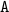 and 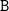 want to exchange messages via a relay 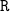. All links between user nodes and relay are assumed to be wireless AWGN links. If has message  and has message 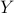, then a simple two-stage protocol for exchanging and is the following:
and has message 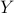, then a simple two-stage protocol for exchanging and is the following:
encodes
to  and encodes to
and encodes to  , and they simultaneously broadcast the codewords. The relay obtains
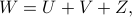where
, and they simultaneously broadcast the codewords. The relay obtains
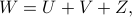where is the additive noise.
is the additive noise.
estimates
 (we embed the messages in a suitable Abelian group with addition operation ), encodes this, and broadcasts to the user nodes.
(we embed the messages in a suitable Abelian group with addition operation ), encodes this, and broadcasts to the user nodes.
Assuming that all goes well, and will be able to recover and respectively. For such a setup, Wilson et al.[1] and Nazer and Gastpar[2] gave a nested lattice coding scheme which ensures that the desired messages can be recovered reliably. If we assume that all links have unit channel gains, both nodes have transmit power constraints of 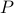, and the noise variance is 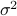, then a rate of 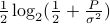 can be achieved.
We look at a problem of securely computing 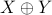.
If we impose the additional constraint that the relay must only be able to recover and not or individually, what can we say about this problem? More specifically, assuming that the messages are uniformly chosen at random, we want
must be able to recover
.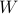 must be independent of
, and must be independent of .
Firstly, is this even doable? We showed[3] that this is indeed the case. In fact, our scheme works even if the distribution of is arbitrary and unknown to the two users. We gave a lattice coding scheme, and found the achievable rates. We also relaxed the security constraint to only requiring that 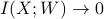 and 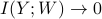 for large blocklengths and gave a scheme that achieves a higher rate. Later, we also made some observations on the case where the channel gains are not unity, and possibly unknown to the user nodes.[4]
References
M. Wilson, K. Narayanan, H. Pfister, and A. Sprintson, ‘‘Joint physical layer coding and network coding for bidirectional relaying,’’ IEEE Trans. Inf. Theory, vol. 56, no. 11, pp. 5641–5654, Nov. 2010.
B. Nazer and M. Gastpar, ‘‘Compute-and-forward: harnessing interfer- ence through structured codes,’’ IEEE Trans. Inf. Theory, vol. 57, no. 10, pp. 6463–6486, Oct. 2011.
S. Vatedka, N. Kashyap, A. Thangaraj, “Secure Compute-and-Forward in a Bidirectional Relay”, IEEE Trans. Inf. Theory, vol. 51, no. 5, pp 2531–2556, May 2015.
S. Vatedka and N. Kashyap, “Nested Lattice Codes for Secure Bidirectional Relaying with Asymmetric Channel Gains”, (Invited), IEEE Information Theory Workshop (ITW), Jerusalem, Israel, 2015.
Secret Key Generation from Gaussian Sources
Consider a set-up where  terminals have correlated random sources. They have access to a public noise-free communication channel, and the aim is to agree upon a secret message (key) by talking to each other on the public channel. The key so obtained must be kept secret from a passive eavesdropper who can listen to all the exchange that takes place across the public channel. At the end of the communication, all terminals must be able to recover the key (which is a function of the sources) reliably, and the key must be independent/nearly independent of the public communication (which is a random variable that depends on the sources and possibly some added randomness).
This set-up is called the source model for secret key generation.
terminals have correlated random sources. They have access to a public noise-free communication channel, and the aim is to agree upon a secret message (key) by talking to each other on the public channel. The key so obtained must be kept secret from a passive eavesdropper who can listen to all the exchange that takes place across the public channel. At the end of the communication, all terminals must be able to recover the key (which is a function of the sources) reliably, and the key must be independent/nearly independent of the public communication (which is a random variable that depends on the sources and possibly some added randomness).
This set-up is called the source model for secret key generation.
Csiszar and Narayan[1] studied the multiterminal source model where all terminals have access to discrete sources (drawn from a finite alphabet). They gave a protocol for secret key generation and characterized the secret key capacity, the maximum number of key bits that can be generated per source sample. This was extended to the case where the sources are Gaussian by Nitinawarat and Narayan[2]. We studied a specific case of the Gaussian multiterminal source model (the dependence structure of the sources can be described by a Markov tree), and gave a lattice coding scheme whose overall complexity (of computing the secret key) is polynomial in the number of samples[3].
References
I. Csiszar and P. Narayan, “Secrecy capacities for multiple terminals,” IEEE Trans. Inf. Theory, vol. 50, no. 12, pp. 3047–3061, Dec. 2004
S. Nitinawarat and P. Narayan, “Secret Key Generation for Correlated Gaussian Sources,” IEEE Trans. Inf. Theory, vol. 58, no. 6, pp. 3373– 3391, Jun. 2012.
S. Vatedka, N. Kashyap, “A Lattice Coding Scheme for Secret Key Generation from Gaussian Markov Tree Sources”, submitted, ISIT 2016.
Computationally Efficient Lattice Coding Schemes
Lattice codes have been shown to be useful in several problems such as reliable communication in AWGN channels, vector quantization, multiterminal source and channel coding, physical layer security, and so on. A useful class of lattices is the so-called Construction-A lattices. These are derived from linear codes over prime fields, and are a good choice for the previously mentioned applications. A key deterrent to using lattice codes in practice is that the computational complexity of finding the closest lattice point scales exponentially in the dimension of the lattice.
We studied a class of Construction-A lattices derived from low-density parity check (LDPC) codes, called low-density Construction-A (LDA) lattices. These were proposed by di Pietro et al.[1], who showed that LDA lattices achieve the capacity of the AWGN channel with closest lattice point decoding. We carried on further studies and showed that LDA lattices have several structural properties that are desirable in practice.
We also proposed a concatenated lattice coding scheme whose encoding/decoding complexity is polynomial in the blocklength[3]. This gives a general technique to reduce the decoding complexity (while maintaining the same rate-error probability performance) of lattice coding schemes. Thus, we can get poly-time coding schemes that achieve the capacity of the AWGN channel, the Gaussian wiretap channel, the rate-distortion limit for memoryless Gaussian sources, and near-optimal poly-time schemes for physical layer network coding, secure compute-and-forward, and several other applications.
References
N. di Pietro, J.J. Boutros, G. Zémor, and L. Brunel, “Integer low-density lattices based on Construction A,” Proc. 2012 Information Theory Workshop, Lausanne, Switzerland, 2012, pp. 422–426.
S. Vatedka and N. Kashyap, “Some Goodness Properties of LDA Lattices”, submitted, Problems of Information Transmission, December 2015.
S. Vatedka and N. Kashyap, “A Capacity-Achieving Coding Scheme for the AWGN Channel with Polynomial Encoding and Decoding Complexity”, accepted, 2016 National Conference on Communications (NCC), Guwahati, India.
Pattern Maximum Likelihood Estimation of DTMCs
This is motivated by the problem of inferring the structure of a graph from a random walk starting from a random vertex. More generally, suppose that we observe  samples of a discrete-time Markov chain (DTMC). We do not know the state space/alphabet of the DTMC, but only know that the number of states/alphabet size is
samples of a discrete-time Markov chain (DTMC). We do not know the state space/alphabet of the DTMC, but only know that the number of states/alphabet size is  . In such a scenario, we want to estimate the transition kernel of the DTMC up to a relabeling of the alphabet. In such a case, the only useful information in the observed sequence is the pattern of the observed sequence. The pattern of an -length string is the -length string of numbers obtained by replacing each element by its order of appearance. For example, the pattern of shashank is 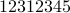. The kernel that maximizes the probability of occurrence of the observed pattern is called the pattern maximum likelihood (PML) distribution.
. In such a scenario, we want to estimate the transition kernel of the DTMC up to a relabeling of the alphabet. In such a case, the only useful information in the observed sequence is the pattern of the observed sequence. The pattern of an -length string is the -length string of numbers obtained by replacing each element by its order of appearance. For example, the pattern of shashank is 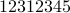. The kernel that maximizes the probability of occurrence of the observed pattern is called the pattern maximum likelihood (PML) distribution.
The motivation for studying the PML distribution of memoryless sources came from the problem of universal source compression.[1,2] There has also been work on designing efficient algorithms to compute the PML estimate.[3] We extended some of the results to Markov sources, and studied some variational techniques for efficiently computing the PML estimate for DTMCs.[4]
References
A. Orlitsky, N. Santhanam, and J. Zhang, “Universal compression of memoryless sources over unknown alphabets,” IEEE Trans. Inf. Theory, vol. 50, no. 7, pp. 1469–1481, Jul. 2004.
A. Orlitsky, N. Santhanam, K. Viswanathan, and J. Zhang, “On modeling profiles instead of values,” in Proc. 20th Conf. Uncertainty in Artificial Intelligence, Banff, Canada, 2004, pp. 426–435.
P.O. Vontobel, “The Bethe and Sinkhorn approximations of the pattern maxi- mum likelihood estimate and their connections to the Valiant-Valiant estimate,” in Proc. 2014 Inf. Theory and Applications Workshop, San Diego, CA, Feb. 2014, pp. 1–10.
S. Vatedka and P.O. Vontobel, “Pattern Maximum Likelihood Estimation of Finite-State Discrete-Time Markov Chains”, submitted, ISIT 2016.